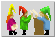
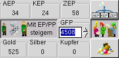
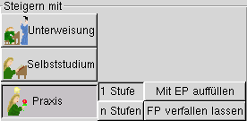
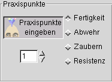

Auf dieser Seite findet die eigentliche Verwaltung der Abenteurer statt.
Dazu ist diese Seite nach verschiedenen Funktionen unterteilt.:
 |
Auswählen, ob mit Erfahrungs- und PRaxispunkten gesteigert wird. |
|
 |
Verhältnis von Geld und EP Aufwendungen:
Um den Anteil der EP-Kosten zu erhöhen wird
der Regler nach oben verschoben (max. 67%), um den Geldanteil zu erhöhen wird der Reglern ach unten bewegt. (Die aktuelle
Einstellung wird gespeichert, die Voreinstellung ist 50:50) |
 |
 |
Eingabe von Erfahrungspunkten:
Die erworbenen AEP, KEP oder ZEP werden in die jeweiligen Felder eingegeben. |
 |
|  |
GFP:
An dieser Stelle können GFP direkt eingegeben werden. |
 |
 |
Geld:
An dieser stelle erfolgt die Eingabe von Geld, der Betrag erscheint auch auf dem ausgedruckten Dokument. |
 |
Diese Buttons dienen dazu, (bei erreichen der entsprechenden Anzahl von GFP) den Grad eines Abenteurers zu erhöhen.
Hierbei werden unter den entsprechenden Buttons die noch fehlende Anzahl der GFP angezeigt, bzw. die FP-Kosten.
 |
Steigern mit Unterweisung:
Die Fertigkeiten werden mit hilfe eines Lehrmeisters erhöht oder gelernt.
Zum lernen muß Geld aufgewand werden. |
|
 |
Steigern im Selbststudium:
Fertigkeiten werden im Selbstudium gesteigert.
Es werden nur EP aufdewendet. |
|
 |
Steigern durch Praxis:
Fertigkeiten werden durch Anwendung gelernt
Das Steigern findet
mit Praxispunkten statt. |
 |
 |
Praxispunkte eingeben:
Paxispunkte für Fertigkeiten, Resitenz, Abwehr und Zaubern eingegeben werden. |
 |
 |
Steigern und erlernen von Fertigkeiten:
Ist dieser Button aktiviert, so werden die Erfolgswerte bereits erlernter Fertigkeiten (im im oberen
Fenster) gesteigert, indem sie mit der Maus angewählt werden. Durch die Auswahl einer Fertigkeit aus derm unteren Fenster wird diese erlernt. |
 |
Reduzieren:
Ist dieser Button aktiv, so wird der Erfolgswert der angewählten Fertigkeit jeweils um 1 reduziert, bis zum Minimalwert reduziert. |
 |
Verlernen:
Nach dem Aktivieren dieses Buttons wird eine Fertigkeit, die mit ihrem Minimalwert beherrscht wird verlernt. |
Alle Notebook-Seiten sind in zwei (oder mehr) Auswahlfenster unterteilt.
Im jewwils oberen Auswahlfenster sind bereits erernte Fertigkeiten aufgelistet. Innerhalb dieses Fensters findet das
eigentliche Steigern durch einen einfachen(!) MAusklick statt.
Im unteren Auswahlfenster sind die erlernbaren Fertigkeiten aufgelistet. Das Erlernen einer FErtigkeit erfolgt ebenfalls
durch einen einfachen Mausklick.